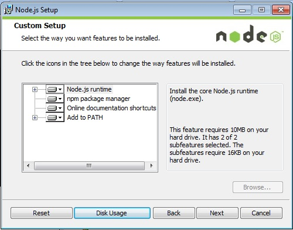
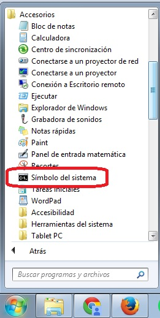
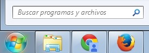
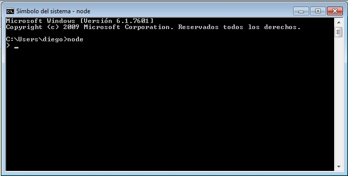
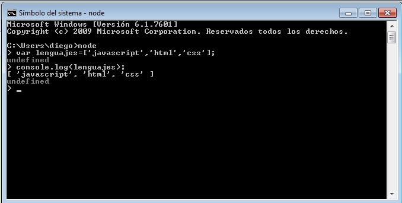
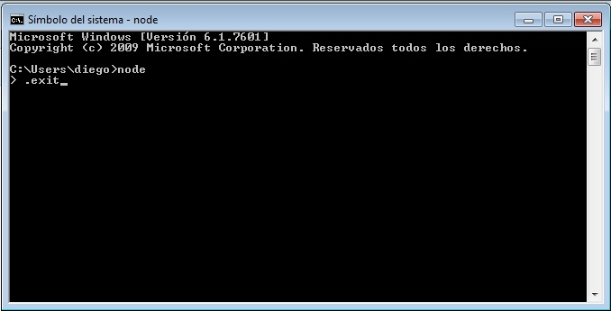
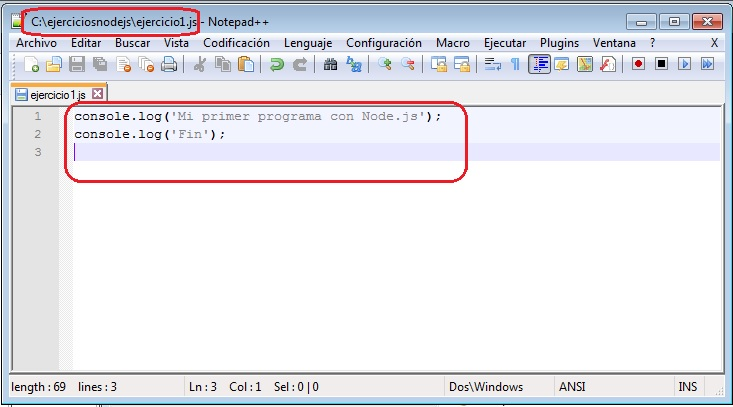
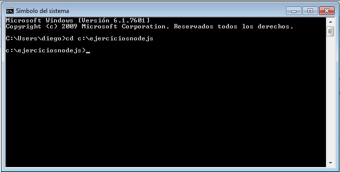
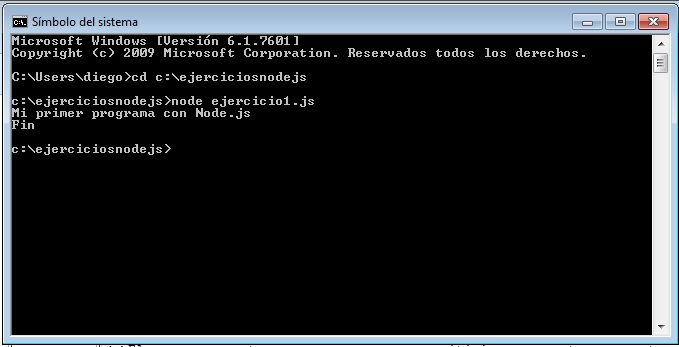

Node.js es una plataforma para el desarrollo de aplicaciones en JavaScript que se ejecutan fundamentalmente en un equipo servidor (pero eventualmente podemos desarrollar aplicaciones cliente)
Presenta grandes ventajas en la implementación de aplicaciones que deben responder en tiempo real como por ejemplo los juegos multijugador.
Poco sentido tiene utilizar Nodo.js en sitios web mayormente estáticos. Hay muchas aplicaciones actuales donde el contenido de la página varía constantemente: Twitter, Facebook, chats, juegos multijugador etc. donde Node.js puede hacer más eficiente la aplicación que se ejecuta en el servidor.
Tiene su origen por el año 2009 y toma como base el motor de JavaScript V8 desarrollado por Google.
Cuando desarrollamos aplicaciones en la plataforma Node.js utilizamos el lenguaje JavaScript para la implementación. Disponemos de numerosos módulos que nos facilitan la implementación de servidores web, administración de archivos, protocolos de comunicaciones etc.
Lo primero que haremos es instalar el Node.js que lo podemos descargar de:aquí.
Procedemos a ejecutar el programa que descargamos e instalamos en nuestro equipo:

Dejamos por defecto que instale el Node.js runtime (es el corazón de Node.js)
El npm que es otro programa que nos permitirá agregar otros paquetes a nuestro entorno de desarrollo de Node.js
Una vez instalado el Node.js debemos abrir una consola ("Símbolo del sistema") en nuestro sistema operativo para controlar que funciona correctamente, esto lo podemos hacer desde el menú:

O escribiendo el comando "cmd" donde dice "Buscar programas y archivos":

Si el programa Node.js se instaló correctamente al tipear node en la consola debería aparecer:

Desde esta línea de comandos podemos ejecutar instrucciones en JavaScript para ver que Node.js efectivamente está funcionando:

Como vemos definimos un vector llamado lenguajes y lo inicializamos con 3 string. Luego mediante el objeto console llamamos al método log para que muestre el contenido de la variable de tipo vector llamada lenguajes.
Desde la línea de comandos de node.js podemos ejecutar instrucciones de Javascript pero si lo que necesitamos es implementar un problema más complejo debemos codificar con un editor de texto un programa y almacenarlo con extensión js para luego ejecutarlo llamando al programa node.
Podemos ahora salir de la línea de comandos de node escribiendo el comando .exit:

Ahora nuevamente nos encontramos en la línea de comandos pero del sistema operativo.
Codifiquemos con nuestro editor de texto favorito (por ejemplo Notepad++) un pequeño programa y lo almacenemos en una carpeta de nuestro sistema operativo donde guardaremos los distintos ejercicios que iremos codificando en este tutorial:

Hemos codificado el programa:
console.log('Mi primer programa con Node.js');
console.log('Fin');
Y lo hemos guardado en un archivo llamado ejercicio1.js en la carpeta c:\ejerciciosnodejs\
Veamos ahora como lo ejecutaremos a nuestro programa. Primero abrimos nuevamente una consola ("Símbolo del sistema") en nuestro sistema operativo nos posicionamos en la carpeta ejerciciosnodejs:

Debemos cambiar y posicionarnos en la carpeta donde almacenamos nuestro programa mediante el comando del sistema operativo Windows "cd" y el path (camino) de la carpeta:
cd c:\ejerciciosnodejs
Finalmente ejecutamos el programa que almacenamos en el archivo ejercicio1.js mediante la sintaxis (node ejercicio1.js):

El resultado del programa aparece en la misma consola (ya que nuestro programa solo muestra dos mensajes utilizando el objeto console)
El resultado de nuestro primer programa es sumamente sencillo pero hemos aprendido a codificar un programa Nodejs, almacenarlo en una carpeta de nuestro sistema y luego ejecutarlo. Este proceso será idéntica a medida que avancemos con este tutorial.